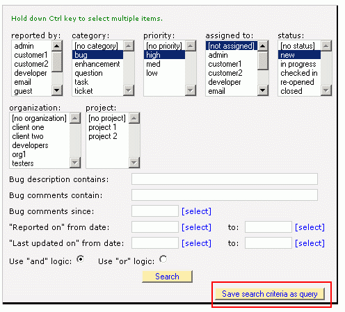
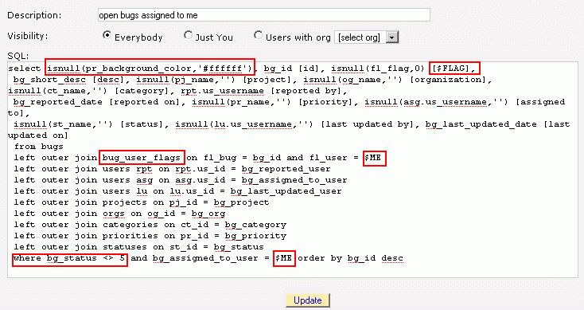

After you log in, the first page you see is bugs.aspx, which shows a list of bugs. The dropdown at the top of the page gives you a choice of which "query" is used to fetch the list of bugs. The query controls which rows and columns are visible. If you add custom fields to the bug, you probably also want to edit the SQL of your queries so as to add them to your bug lists too. You can create any queries you want, as long as the follow a few simple conventions, described below.
One reason for creating your own queries is that you can define a workflow by having your statuses (or other data) and queries work together. For example, you can create a status "ready for QA testing" and then create a query "Bugs Ready for Testing" that shows ONLY bugs in the "ready for QA testing" status. You can then set the default query of your QA tester to "Bugs Ready for Testing". Since you can define any status and any query you want, you have complete control.
There are two ways to create queries:
1. Beginner: Using the search page. Enter your search criteria and then click the "save sql as query"
button.

2. Advanced: Edit the SQL by hand via the queries page. This option gives you complete control. By editing the list of columns after the "SELECT" keyword, you control which columns are visible in the bug list. By editing the "where" clause, you control which rows are visible.
In order to work with the bugs.aspx page, your SQL must be structured in a particular way. The first column must be either a color starting with "#" or a CSS style class. If it starts with "#", it will be interpreted as the background color of the row. Otherwise, it will be interpreted as the name of a CSS style class in your CSS file.
View this example of one way to change the color of your rows. The example uses a combination of priority and status to determine the CSS style, but feel free to come up with your own scheme.
The second column must be "bg_id".
There are some "magic words" that you can use to make your queries more powerful.
"$ME" is a magic word you can use in your query that gets replaced by your user ID. For example:
select isnull(pr_background_color,'#ffffff'), bg_id [id], bg_short_desc
from bugs
left outer join priorities on bg_priority = pr_id
where bg_assigned_to_user = $ME
"$FLAG" is a magic word that controls whether a query shows the "flag" column that lets an individual user flag items for himself. To use it, add the SQL shown below to your select columns and do a "left outer join" to the bug_user_flags table.
Select ...., isnull(fl_flag,0) [$FLAG],...
from bugs
left outer join bug_user_flags on fl_bug = bg_id and fl_user = $ME
"$SEEN" is a magic word that controls whether a query shows the "new" column. The new column works the same as
an indicator for unread email. To use it, add the SQL shown below to your select columns and do a "left outer
join" to the bug_user_seen table.
Select ...., isnull(sn_seen,0) [$SEEN],...
from bugs
left outer join bug_user_seen on sn_bug = bg_id and sn_user = $ME
"$VOTE" is a magic word that controls whether a query shows the "votes" column. The number displayed is the total votes. A user can click on the column to upvote.
Select ......., (isnull(vote_total,0) * 10000) + isnull(bu_vote,0) [$VOTE], from bugs left outer join bug_user on bu_bug = bg_id and bu_user = $ME left outer join votes_view on vote_bug = bg_id

The permission scheme of BugTracker.NET is enforced by logic which alters your SQL just before it is executed, adding to it "WHERE" clauses that reflect the permissions. For example, let's says your query is the following:
select .... from bugs order by bg_id descThe permissions logic will automatically alter it by revising your query to say something like this:
select .... from bugs WHERE [the bugs are associated with projects and organizations the user has permissiong to see] order by bg_id descSometimes the logic to alter your query gets confused by some unusual construction in your SQL, like confusing a subquery's WHERE clause with the main query's WHERE clause. If there is an error, check the BugTracker.NET log to see what the SQL looked like AFTER it was modified. If it appears that the logic is confused, then you can give the logic a "hint" as to where to modify your query. One hint is to write the word WHERE as "WhErE" to mark the clause that should be modified. For more examples of hints, see the method alter_sql_per_project_permissions in the file util.cs.